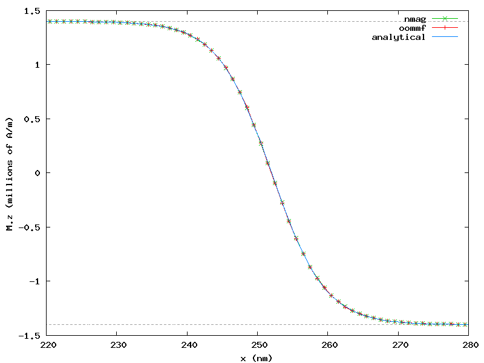

2.10. Example: Uniaxial anisotropy¶
In this example we would like to simulate the development of a Bloch type domain wall on a thin cobalt bar of dimension 504 x 1 x 1 nm (bar.nmesh.h5) due to uniaxial anisotropy.
2.10.1. Uniaxial anisotropy simulation script¶
import nmag
from nmag import SI, every, at
from numpy import array
import math
# Create simulation object (no demag field!)
sim = nmag.Simulation(do_demag=False)
# Define magnetic material (data from OOMMF materials file)
Co = nmag.MagMaterial(name="Co",
Ms=SI(1400e3, "A/m"),
exchange_coupling=SI(30e-12, "J/m"),
anisotropy=nmag.uniaxial_anisotropy(axis=[0, 0, 1], K1=SI(520e3, "J/m^3")))
# Load the mesh
sim.load_mesh("bar.nmesh.h5", [("bar", Co)], unit_length=SI(1e-9,"m") )
# Our bar is subdivided into 3 regions:
# - region A: for x < offset;
# - region B: for x between offset and offset+length
# - region C: for x > offset+length;
# The magnetisation is defined over all the three regions,
# but is pinned in region A and C.
offset = 2e-9 # m (meters)
length = 500e-9 # m
# Set initial magnetisation
def sample_m0((x, y, z)):
# relative_position goes linearly from -1 to +1 in region B
relative_position = -2*(x - offset)/length + 1
mz = min(1.0, max(-1.0, relative_position))
return [0, math.sqrt(1 - mz*mz), mz]
sim.set_m(sample_m0)
# Pin magnetisation outside region B
def sample_pinning((x, y, z)):
return x >= offset and x <= offset + length
sim.set_pinning(sample_pinning)
# Save the magnetisation along the x-axis
def save_magnetisation_along_x(sim):
f = open('bar_mag_x.dat', 'w')
for i in range(0, 504):
x = array([i+0.5, 0.5, 0.5]) * 1e-9
M = sim.probe_subfield_siv('M_Co', x)
print >>f, x[0], M[0], M[1], M[2]
# Relax the system
sim.relax(save=[(save_magnetisation_along_x, at('convergence'))])
We shall now discuss the bar.py script step-by-step:
In this particular example we are solely interested in energy terms resulting from exchange interaction and anisotropy. Hence we disable the demagnetisation field as follows:
sim = nmag.Simulation(do_demag=False)
We then create the material Co used for the bar, cobalt in this case, which exhibits uniaxial_anisotropy in z direction with phenomenological anisotropy constant K1 = SI(520e3, "J/m^3"):
Co = nmag.MagMaterial(name="Co",
Ms=SI(1400e3, "A/m"),
exchange_coupling=SI(30e-12, "J/m"),
anisotropy=nmag.uniaxial_anisotropy(axis=[0, 0, 1], K1=SI(520e3, "J/m^3")))
After loading the mesh, we set the initial magnetisation direction such that it rotates from +z to -z while staying in the plane normal to x direction (hence suggesting the development of a Bloch type domain wall):
def sample_m0((x, y, z)):
# relative_position goes linearly from -1 to +1 in region B
relative_position = -2*(x - offset)/length + 1
mz = min(1.0, max(-1.0, relative_position))
return [0, math.sqrt(1 - mz*mz), mz]
We further pin the magnetisation at the very left (x < offset = 2 nm) and right (x > offset + length = 502 nm) of the bar (note that the pinning function may also just return a python truth value rather than the number 0.0 or 1.0):
def sample_pinning((x, y, z)):
return x >= offset and x <= offset + length
sim.set_pinning(sample_pinning)
Finally, we relax the system to find the equilibrium magnetisation configuration, which is saved to the file bar_mag_x.dat in a format understandable by Gnuplot.
2.10.2. Visualization¶
We can then use the following Gnuplot script to visualize the equilibrium magnetisation:
set term png giant size 800, 600
set out 'bar_mag_x.png'
set xlabel 'x (nm)'
set ylabel 'M.z (millions of A/m)'
plot [0:504] [-1.5:1.5] \
1.4 t "" w l 0, -1.4 t "" w l 0, \
'bar_mag_x.dat' u ($1/1e-9):($4/1e6) t 'nmag' w l 2
The resulting plot clearly shows that a Bloch type domain wall has developed:

The figure shows also that the Bloch domain wall is well localized at the center of the bar, in the region where x goes from 200 to 300 nm.
2.10.3. Comparison¶
After simulating the same scenario with OOMMF (see oommf/bar.mif), we can compare results using another Gnuplot script:
#set term postscript enhanced eps color
set term png giant size 800, 600
set out 'bar_mag_x_compared.png'
set xlabel 'x (nm)'
set ylabel 'M.z (millions of A/m)'
Mz(x) = 1400e3 * cos(pi/2 + atan(sinh((x - 252e-9)/sqrt(30e-12/520e3))))
plot [220:280] [-1.5:1.5] \
1.4 t "" w l 0, -1.4 t "" w l 0, \
'bar_mag_x.dat' u ($1/1e-9):($4/1e6) t 'nmag' w lp 2, \
'oommf/bar_mag_x.txt'u ($1/1e-9):($4/1e6) t 'oommf' w lp 1, \
Mz(x*1e-9)/1e6 ti 'analytical' w l 3
which generates the following plot showing good agreement of both systems:
The plot shows also the known analytical solution:
Mz(x) = Ms * cos(pi/2 + atan(sinh((x - x_wall)/sqrt(A/K1))))
The plot shows only a restricted region located at the center of the bar, thus allowing an easier comparison between the three sets of data.